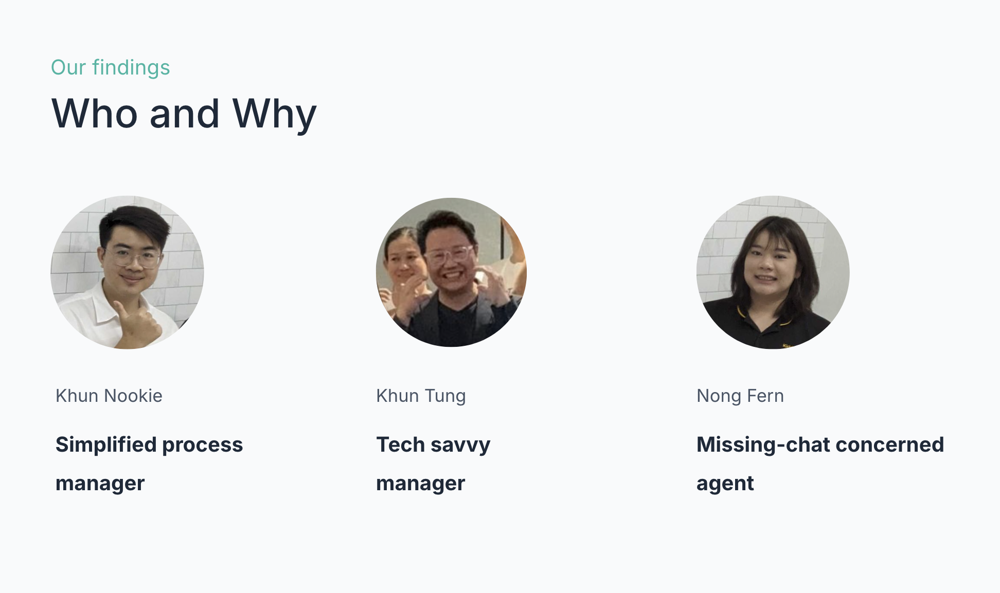
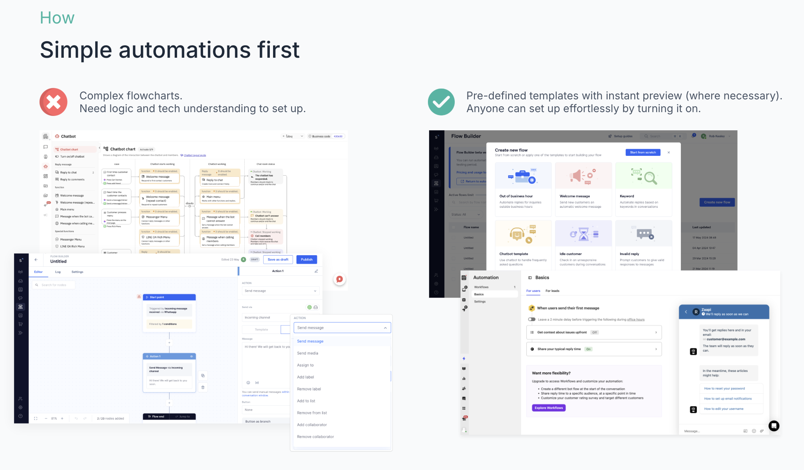
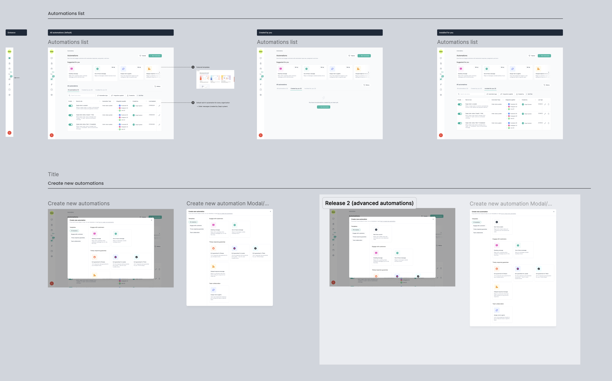
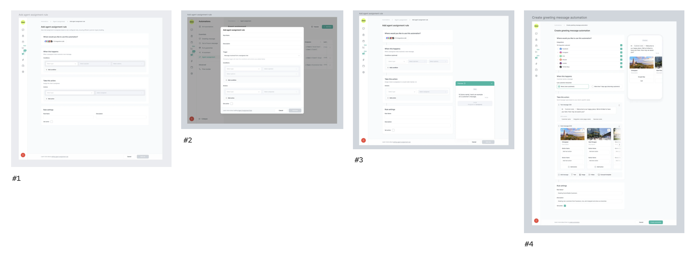
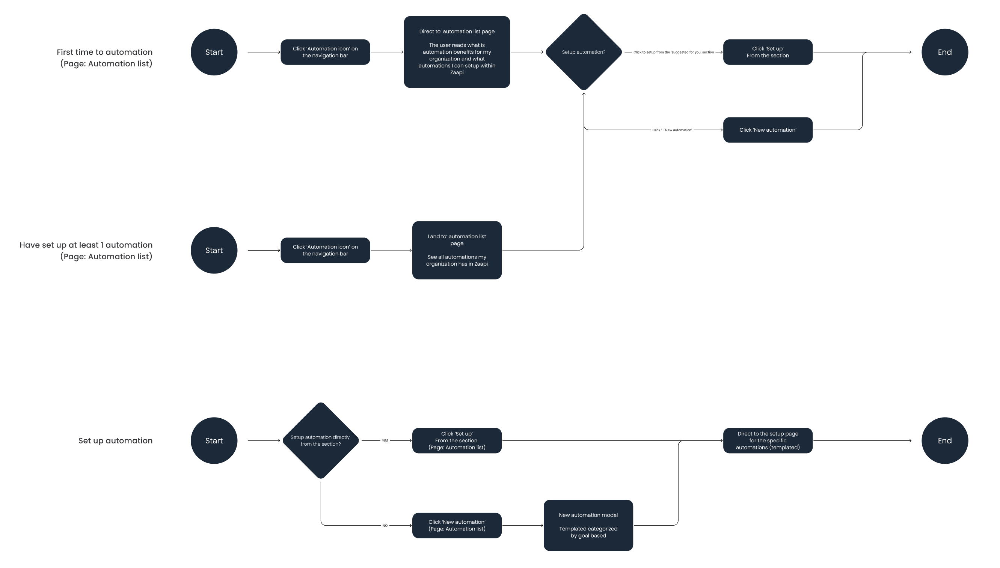
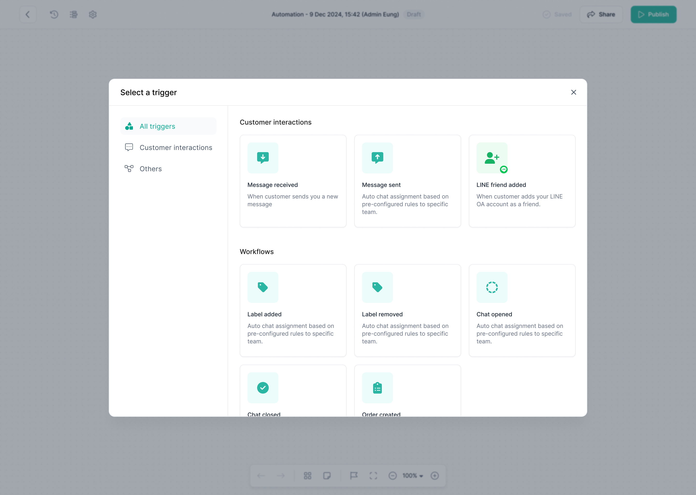
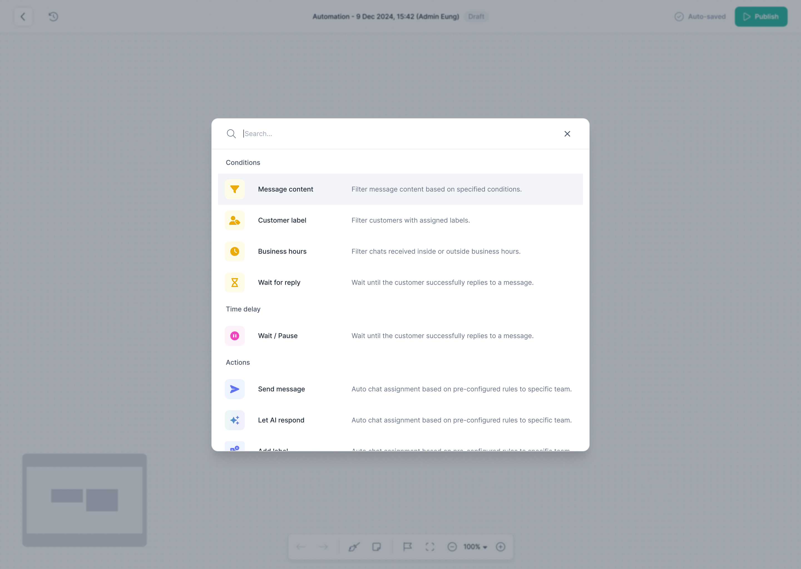
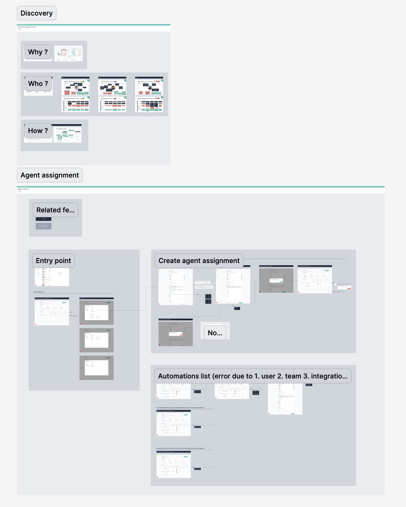

Designed a two-phase no-code automation system — from simple templates to a full drag-and-drop flow builder — so non-technical business owners could build customer service automations without engineering help.
95%
Fewer unresponded chats — down from 95 to 5 per week
87%
Faster replies — down from 1hr 24min to 11min average
Role
Product Design Lead
Company
Zaapi
Timeline
~6 mo. to Phase 1, then Phase 2
Feature
Automations & Flow Builder
Process
Design Thinking
Executive Summary
The Situation
Automations needed to close the gap versus competitors already offering it in the Thai SaaS market, introduce a "sticky" feature that boosted agent efficiency and drove renewals, and lay the foundation for future marketing and chat automations.
The Problem
Customer service managers had to meet SLA standards that varied across marketplace platforms, agents resisted after-hours work, and hiring more staff was expensive. Most teams needed automations that covered their essential needs — not comprehensive customization.
Timeline & Team
~6 months to Phase 1, then Phase 2 · [team — add who you worked with: designers, PM, engineers]
My Contribution
Led the UX initiative end to end — research, design exploration, and handover documentation — from the first customer interviews through the Phase 2 Flow Builder.
The Result
95% fewer unresponded chats and 87% faster replies after Phase 1 launched.
Context
Automation was table stakes Zaapi didn't have yet
Automations needed to close the gap versus competitors already offering it in the Thai SaaS market, introduce a feature sticky enough to boost agent efficiency and drive renewals, and lay the foundation for future marketing and chat automations.
Problem
Two roles, one shared pressure: keep up without more headcount
Five exploratory interviews with sellers, agents, and managers — synthesized into empathy maps and journey maps — surfaced two personas under the same pressure from different sides. The core finding: most users wanted simple automations covering their essential needs, which turned out to be the key to feature adoption.
Customer Service / Business Manager
Pain points
Meeting SLA standards that vary across marketplace platforms
Agents unwilling to work outside business hours
Cost and training burden of hiring more staff
Chat Agent
Pain points
Struggles handling high chat volume during campaigns
Resistance to after-hours work; needs real-time breaks

Research synthesis — interviews, empathy maps & journeys
My Role
What I owned, end to end
I led the UX initiative end to end — the first customer interviews, empathy maps and journey maps, feature prioritization, low- and high-fidelity design exploration, usability testing, and the handover documentation engineering built from across both phases — partnering with [add PM/eng stakeholders you worked with].
Design Process
Double Diamond — research before solutions
I use the Double Diamond as my framework: research on-site with customers and users first, before designing anything. For Automations that meant sitting with sellers, agents, and managers before a single screen got sketched.
Discover and Define covered the five on-site interviews, empathy maps, and journey maps behind the two personas above. Develop and Deliver covered the design exploration and decisions below, through to what shipped in Phase 1 and Phase 2.
Key Decisions
What I chose, and why
Three decisions shaped whether this feature would get adopted at all, let alone earn a Phase 2.
Start simple, scale later
Alternative: comprehensive customization options from day one
Chose to launch Phase 1 with four basic templates — auto-assignment, automated greeting/out-of-hours messages, comment reply, and label tagging — prioritizing adoption and speed-to-market over feature completeness. Rapid usability testing showed the templates met over 80% of user needs with zero learning curve; users described it as "like filling out a form."
Where automation lives in the product
Alternative: placing the feature inside team management for a seamless entry point vs. a dedicated navigation item for standalone visibility
[confirm which option shipped, and why] — both were prototyped and explored before the final call.
How templates are presented
Alternative: a single modal showing all templates on one page vs. dedicated navigation tabs per automation type
[confirm which option shipped, and why].

Feature prioritization — user needs vs. technical comfort
Solution & Delivery
What shipped
A two-phase no-code automation system: four simple templates anyone could turn on with zero learning curve, and a full drag-and-drop flow builder for teams that outgrew them.
Phase 1 — Basic automation templates
Four core templates — auto-assignment, automated greeting and out-of-hours messages, comment reply, and label tagging — set up through a one-page form with a live chat preview, so there was nothing to learn.

Automation template list

Design exploration — entry points & selection

End-to-end user flow — first-time, experienced & setup
Phase 2 — Custom Flow Builder
Once Phase 1 proved demand, Phase 2 introduced a drag-and-drop visual flow system for complex logic — modular trigger → filter → action cards, so power users could build custom automations without engineering.

Flow builder — trigger & node selection

Flow builder — building a flow
Handover
Documented for engineering with feature purpose, personas, flows, and specifications for both phases — so what shipped in Phase 2 could build cleanly on what Phase 1 had already proven.

Handover documentation
Impact & Learning
95%
Fewer unresponded chats — down from 95 to 5 per week
87%
Faster replies — down from 1hr 24min to 11min average
What I'd improve
Prioritizing delivery over discovery paid off — shipping a minimum lovable product around the highest-volume use cases first is what got Phase 1 to 80% coverage with zero learning curve. What I'd change next: the jump from Basic Automations to the Flow Builder should be a single click, not a rebuild — preserving triggers, conditions, actions, and history. Longer-term, I'd standardize on the Flow Builder as the one interface, so people don't have to think about which tool they're in.